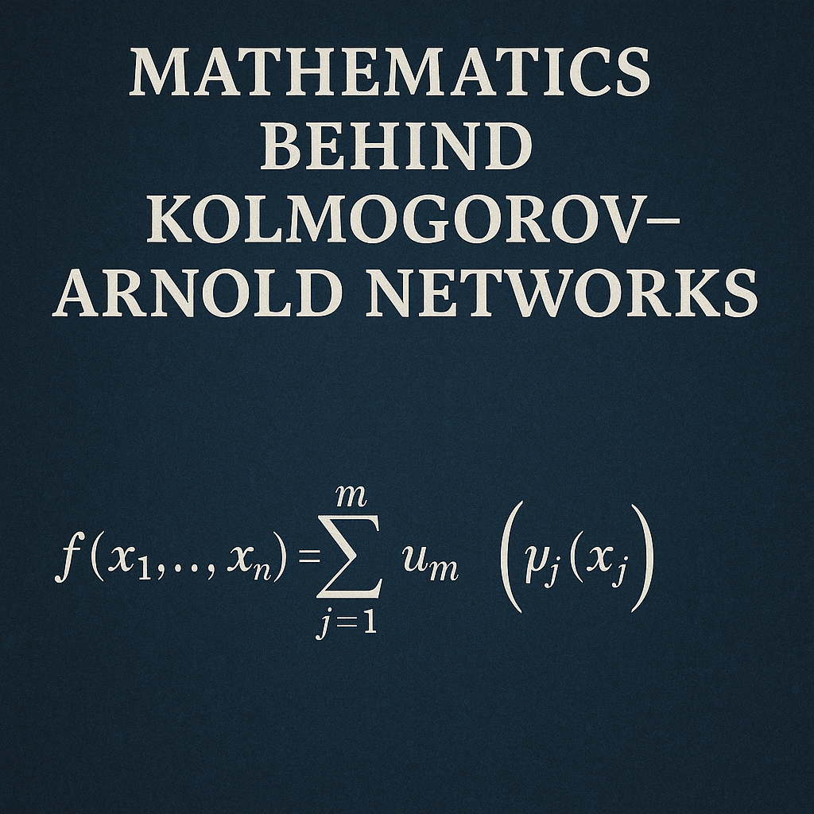

The Mathematics Behind Kolmogorov-Arnold Networks

Introduction
Kolmogorov-Arnold Networks (KANs) represent a paradigm shift in neural network architecture, moving away from the traditional linear combinations of fixed activation functions toward networks that learn the activation functions themselves. This revolutionary approach is grounded in the profound mathematical insights of Andrey Kolmogorov and Vladimir Arnold, whose representation theorem provides the theoretical foundation for these networks.
The Kolmogorov-Arnold Representation Theorem
Historical Context and Statement
In 1957, Andrey Kolmogorov and his student Vladimir Arnold proved a remarkable theorem that fundamentally changed our understanding of multivariate function representation. The theorem states:
Kolmogorov-Arnold Theorem: Every continuous multivariate function defined on a bounded domain can be represented as a composition and superposition of continuous functions of a single variable.
Formally, for any continuous function \(f: [0,1]^n \to \mathbb{R}\), there exist continuous functions \(\phi_{q,p}: [0,1] \to \mathbb{R}\) and \(\Phi_q: \mathbb{R} \to \mathbb{R}\) such that:
\[ f(x_1, x_2, \ldots, x_n) = \sum_{q=0}^{2n} \Phi_q\left(\sum_{p=1}^{n} \phi_{q,p}(x_p)\right) \]
where the inner functions \(\phi_{q,p}\) are independent of \(f\) and depend only on the dimension \(n\).
Mathematical Significance
This theorem is remarkable because it demonstrates that the curse of dimensionality can be overcome through clever composition of univariate functions. The key insights are:
- Universality: The inner functions \(\phi_{q,p}\) are universal and independent of the target function \(f\)
- Compositionality: Complex multivariate functions can be decomposed into simpler univariate components
- Finite Width: Only \(2n+1\) terms are needed in the outer sum
From Classical Theory to Neural Networks
Traditional Neural Networks vs. KANs
Traditional multilayer perceptrons (MLPs) implement the universal approximation theorem through:
\[ f(x) = \sum_{i=1}^{m} w_i \sigma\left(\sum_{j=1}^{n} w_{ij} x_j + b_i\right) \]
where \(\sigma\) is a fixed activation function (e.g., ReLU, sigmoid, tanh).
KANs, inspired by the Kolmogorov-Arnold theorem, instead use:
\[ f(x) = \sum_{q=0}^{2n} \Phi_q\left(\sum_{p=1}^{n} \phi_{q,p}(x_p)\right) \]
where both \(\phi_{q,p}\) and \(\Phi_q\) are learnable functions.
The Fundamental Difference
The crucial difference lies in where the nonlinearity is applied: - MLPs: Apply fixed nonlinear activations to linear combinations of inputs - KANs: Learn the nonlinear functions themselves, applied to individual variables
Mathematical Foundations of KAN Architecture
Function Parametrization
In practical implementations, the learnable functions \(\phi\) and \(\Phi\) are typically parametrized using:
B-Splines
B-splines provide a flexible and numerically stable way to represent univariate functions:
\[\phi(x) = \sum_{i=0}^{G} c_i B_i^k(x)\]
where: - \(B_i^k(x)\) are B-spline basis functions of degree \(k\) - \(c_i\) are learnable coefficients - \(G\) is the number of control points
Advantages of B-Splines:
- Local Support: Changes in coefficients affect only local regions
- Smoothness: Degree \(k\) splines are \(C^{k-1}\) continuous
- Numerical Stability: Well-conditioned basis functions
- Interpretability: Control points provide intuitive understanding
Layer-wise Composition
A practical KAN extends the basic representation through multiple layers:
\[\text{KAN}(x) = \text{KAN}_L \circ \text{KAN}_{L-1} \circ \cdots \circ \text{KAN}_1(x)\]
where each layer \(\text{KAN}_\ell\) transforms inputs through learnable univariate functions:
\[\text{KAN}_\ell(x^{(\ell-1)}) = \left(\sum_{j=1}^{n_{\ell-1}} \phi_{\ell,i,j}(x^{(\ell-1)}_j)\right)_{i=1}^{n_\ell}\]
Residual Connections
To enhance expressivity and training stability, KANs often include residual connections:
\[\phi_{\ell,i,j}(x) = w_{\ell,i,j} \cdot \text{spline}_{\ell,i,j}(x) + b_{\ell,i,j} \cdot x\]
where: - \(\text{spline}_{\ell,i,j}(x)\) is the B-spline component - \(w_{\ell,i,j}\) and \(b_{\ell,i,j}\) are learnable parameters - The linear term \(b_{\ell,i,j} \cdot x\) provides a residual connection
Optimization and Training
Loss Function
The training objective for KANs typically includes both accuracy and regularization terms:
\[\mathcal{L} = \mathcal{L}_{\text{data}} + \lambda_1 \mathcal{L}_{\text{sparse}} + \lambda_2 \mathcal{L}_{\text{smooth}}\]
where: - \(\mathcal{L}_{\text{data}}\) is the standard prediction loss (MSE, cross-entropy, etc.) - \(\mathcal{L}_{\text{sparse}}\) encourages sparsity in the network - \(\mathcal{L}_{\text{smooth}}\) promotes smooth activation functions
Sparsity Regularization
To encourage interpretable networks, KANs use sparsity regularization:
\[ \mathcal{L}_{\text{sparse}} = \sum_{\ell,i,j} |w_{\ell,i,j}| + |b_{\ell,i,j}| \]
This L1 penalty encourages many connections to become exactly zero, leading to sparse, interpretable networks.
Smoothness Regularization
To prevent overfitting and ensure smooth activation functions:
\[ \mathcal{L}_{\text{smooth}} = \sum_{\ell,i,j} \int \left(\frac{d^2}{dx^2} \phi_{\ell,i,j}(x)\right)^2 dx \]
This penalizes high curvature in the learned functions, promoting smooth and generalizable representations.
Theoretical Properties
Universal Approximation
KANs inherit universal approximation properties from the Kolmogorov-Arnold theorem:
Theorem: Given sufficient width and depth, KANs can approximate any continuous function on a compact domain to arbitrary accuracy.
Proof Sketch: The constructive proof of the Kolmogorov-Arnold theorem shows that any continuous function can be represented in the KAN form. The B-spline parametrization provides the flexibility to approximate the required univariate functions.
Expressivity Analysis
The expressivity of KANs can be analyzed through several lenses:
Parameter Efficiency
For a function of \(n\) variables requiring \(m\) parameters in an MLP, a KAN might achieve similar approximation quality with fewer parameters due to its compositional structure.
Sample Complexity
The sample complexity of KANs is related to the intrinsic dimensionality of the target function rather than the ambient dimensionality, potentially providing advantages for high-dimensional problems with low-dimensional structure.
Approximation Rates
Under smoothness assumptions on the target function, KANs can achieve superior approximation rates:
Theorem: For target functions with bounded mixed derivatives, KANs achieve approximation error \(O(n^{-r/d})\) where \(r\) is the smoothness parameter and \(d\) is the intrinsic dimension.
Computational Complexity
Forward Pass Complexity
For a KAN with \(L\) layers and width \(n\): - Time Complexity: \(O(L \cdot n^2 \cdot G)\) where \(G\) is the number of B-spline coefficients - Space Complexity: \(O(L \cdot n^2 \cdot G)\) for parameter storage
Backward Pass Complexity
The gradient computation involves: - Gradients with respect to B-spline coefficients - Gradients with respect to residual connection parameters - Chain rule application through the compositional structure
The overall complexity remains \(O(L \cdot n^2 \cdot G)\) for both forward and backward passes.
Interpretability and Symbolic Regression
Automatic Symbolification
One of the most remarkable features of KANs is their ability to discover symbolic representations:
Pruning Process
- Training: Train the full KAN with sparsity regularization
- Pruning: Remove connections with small weights
- Symbolification: Replace smooth functions with symbolic equivalents
Symbol Discovery
KANs can automatically discover that learned functions correspond to elementary functions: - Polynomials: \(x^n\) - Exponentials: \(e^x\) - Trigonometric: \(\sin(x)\), \(\cos(x)\) - Logarithmic: \(\log(x)\)
Mathematical Insights
The learned functions often reveal mathematical structure:
\[ f(x_1, x_2) = \sin(x_1) + x_2^2 \]
might be discovered as:
\[ \text{KAN}(x_1, x_2) = \Phi_1(\phi_{1,1}(x_1)) + \Phi_2(\phi_{2,2}(x_2)) \]
where \(\phi_{1,1} \approx \sin\) and \(\phi_{2,2} \approx x^2\).
Advanced Mathematical Concepts
Measure Theory Perspectives
From a measure-theoretic viewpoint, the Kolmogorov-Arnold theorem can be understood as a statement about the existence of certain measurable functions that achieve the required representation.
Functional Analysis
The space of functions representable by KANs forms a dense subset of \(C([0,1]^n)\) under the uniform norm, providing a functional analytic foundation for their approximation capabilities.
Information Theory
The representational efficiency of KANs can be analyzed through the lens of information theory, where the learned functions encode essential information about the target function’s structure.
Limitations and Extensions
Theoretical Limitations
- Constructive vs. Practical: The original Kolmogorov-Arnold theorem is non-constructive; practical KANs use approximations
- Smoothness Requirements: The theorem applies to continuous functions; practical considerations require differentiability
- Domain Restrictions: The theorem is stated for bounded domains; extensions to unbounded domains require careful treatment
Recent Extensions
Multidimensional KANs
Extensions to handle tensor-valued inputs and outputs:
\[ \text{Tensor-KAN}: \mathbb{R}^{n_1 \times n_2 \times \cdots} \to \mathbb{R}^{m_1 \times m_2 \times \cdots} \]
Convolutional KANs
Incorporating spatial structure through learnable convolution-like operations:
\[ \text{Conv-KAN}(x) = \sum_{i,j} \phi_{i,j}(x * k_{i,j}) \]
where \(k_{i,j}\) are learnable kernels and \(\phi_{i,j}\) are learnable activation functions.
Future Directions
Theoretical Developments
- Approximation Theory: Tighter bounds on approximation rates
- Optimization Theory: Convergence guarantees for KAN training
- Generalization Theory: Sample complexity bounds for KANs
Practical Innovations
- Efficient Implementations: GPU-optimized B-spline evaluations
- Architecture Search: Automated design of KAN topologies
- Hybrid Models: Combinations of KANs with other architectures
Conclusion
Kolmogorov-Arnold Networks represent a fundamental shift in neural network design, moving from fixed activation functions to learnable univariate functions. The mathematical foundations, rooted in the profound insights of Kolmogorov and Arnold, provide both theoretical guarantees and practical advantages. The ability to automatically discover symbolic representations while maintaining universal approximation capabilities makes KANs a powerful tool for both machine learning and mathematical discovery.
The interplay between classical approximation theory and modern deep learning exemplified by KANs suggests that there are still fundamental insights to be gained by revisiting classical mathematical results through the lens of contemporary computational capabilities. As we continue to develop and refine these networks, we can expect them to play an increasingly important role in both theoretical understanding and practical applications of neural computation.
The mathematical elegance of KANs lies not just in their theoretical foundations, but in their ability to bridge the gap between approximation theory and interpretable machine learning, offering a path toward more transparent and mathematically principled artificial intelligence systems.